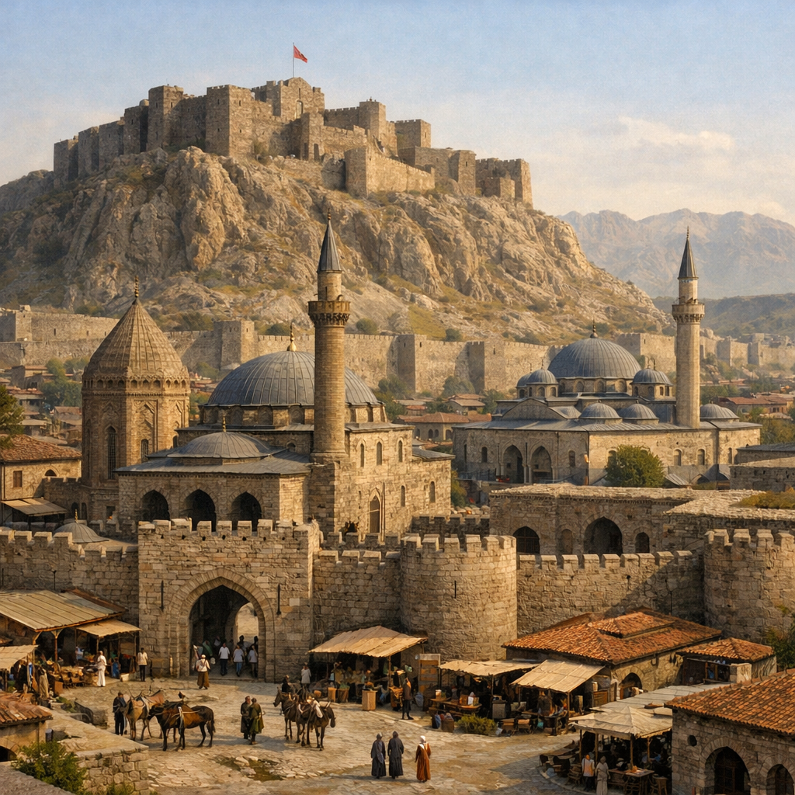

REHBERİ YÜKLENİYOR...
Urartulardan Bugüne Van'ın Gizemli Geçmişi
Van'ın kalbi m.ö. 9. yüzyılda Urartu Kralı I. Sardur ile atmaya basladı. Krallığın başkenti Tuşba (Van Kalesi), mühendislik harikası Şamran kanalı ve paha biçilmez altın işçiliği ile o dönem dünyanın en ileri medeniyetlerinden biriydi. Kral Menua ve Argishti'nin mirası bugün hala kale duvarlarında çivi yazılarıyla yaşıyor.
Malazgirt Zaferi'nin (1071) ardından Van, tamamen Türklerin hakimiyetine girdi. Ahlatşahlar ve Selçuklu mirasıyla donatılan şehir, 1548 yılında Kanuni Sultan Süleyman tarafından Osmanlı'ya katıldı. Eski Van Kalesi eteğindeki şehir, camileri, yedi kapılı surları ve hanlarıyla tam bir ticaret merkezi halini aldı.

Birinci Dünya Savaşı'nda "Eski Van Şehri" tamamen yakılıp yıkılarak harabeye döndü. 2 Nisan 1918'de düşman işgalinden kurtulan halk, kalenin dibindeki o harabe şehri bırakıp, bugünkü modern Van'ın olduğu bölgeye tasındı. Van, küllerinden yeniden doğan bir kahramanlık sembolü oldu.
Van'ın Kurtuluşu
Toplam Ziyaretçi
kişi bu siteyi ziyaret etti